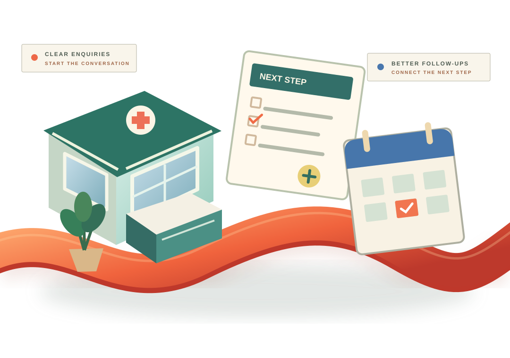

01 / FIND INFORMATION
Helpful services.
Unclear next steps.
Visitors need accurate, accessible information about services and contact options.
INDUSTRY 05 / HEALTHCARE BUSINESSES
The experience around healthcare should feel considered, too. Help people find clear information, reach the right team and understand the next administrative step—while keeping clinical care with qualified professionals.

CONCEPTUAL ARTWORK / NOT A CLINICAL SERVICE OR PATIENT RECORD
01 / THE BUSINESS SIDE OF CARE
Reception desks, general enquiries and everyday coordination involve many moving parts. Consistency can make the experience easier for visitors and staff.
Visitors need accurate, accessible information about services and contact options.
Administrative enquiries can become fragmented across channels and teams.
Clear responsibility for nonclinical follow-up helps teams respond consistently.
02 / A CONSIDERATE NONCLINICAL SERVICE PATH
Explore a fictional healthcare reception and administrative journey, focusing only on public information, general business enquiries, nonclinical follow-up and staff responsibilities. This illustration is not a real practice, patient portal, appointment system, clinical workflow or medical service.
Scroll to reveal each administrative step · Scroll up to reverse · Use the existing journey controls below for direct selection.
People should find approved business details, accessibility information and appropriate contact options without encountering confusing claims.
DISCOVERY / PUBLIC INFORMATIONDirect nonclinical business enquiries to an administrative contact, with transparent expectations and no capture of symptoms or medical information.
GENERAL ENQUIRIES / CONTACT CLARITYIllustrate clear owners, useful business updates and a simple follow-up checklist without creating appointments or patient records.
ADMINISTRATION / NONCLINICAL FOLLOW-UPMake general responsibilities visible while clinicians retain control of patient care, clinical decisions and regulated information.
STAFF RESPONSIBILITY / BUSINESS COMMUNICATION03 / THE CONNECTED PRACTICE JOURNEY
Explore an example nonclinical workflow. No patient records, appointments or medical advice are processed by this demonstration.
DISCOVERY / PUBLIC INFORMATION
Present nonclinical service information, contact options and expectations in a simple, accessible way.
04 / PRACTICAL BUSINESS SUPPORT
Taamerat360 supports general business growth and nonclinical operations. Patient portals, health records, medical devices and regulated integrations require separate review and are not offered or represented here.
Make practice information easier to discover and understand.
Explore packageImprove responses and follow-ups for appropriate business enquiries.
Explore packageOrganise general front-office actions and responsibilities.
Explore packageConnect discovery, business communication and operational follow-through.
Explore package05 / VERIFIED WORK ONLY
Verified client case studies, practice imagery, measurable business outcomes and approved testimonials will appear here when supplied and authorized. We will not present fabricated patient stories or clinical outcomes.
Explore your own opportunity[Verified nonclinical business challenge, approach and outcomes]
06 / BEGIN WITH BUSINESS NEEDS
Select three general business preferences to create a shareable starting brief. Do not include patient names, medical details or other sensitive information.
Choose your business type and administrative priorities, then prepare a brief to copy.
Your answers remain in this browser. Do not share health information through this brief.
07 / TRUST & BOUNDARIES
We keep the business conversation separate from clinical decisions and sensitive health data.
No. This page is about general business communication, service discovery and nonclinical coordination. Medical advice, diagnosis, treatment, triage and emergency response must remain with qualified providers and appropriate official channels.
No. The brief contains only fixed business categories. Do not paste patient names, medical histories, appointment details or sensitive health data into enquiries. Any future handling of regulated data requires a separately agreed security, privacy and compliance review.
Any integration would require technical discovery, access controls, legal review and written approval before a service commitment. This demonstration does not connect to patient records or scheduling systems.
HEALTHCARE BUSINESS / THE NEXT CONVERSATION
Let's identify a sensible, nonclinical business improvement and agree on the next step—with your team and customers in mind.
Discuss a business project